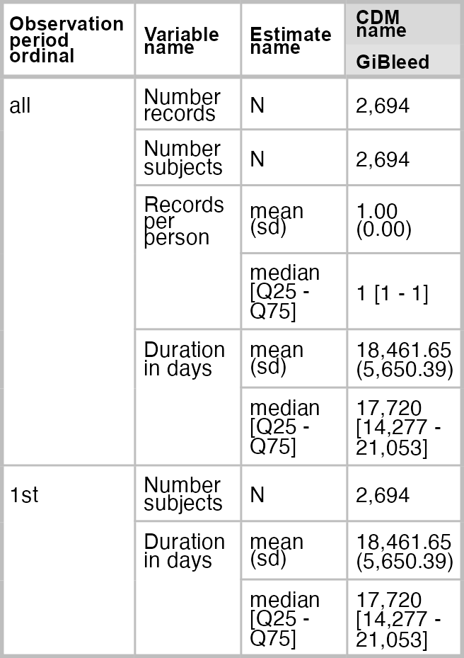

OmopConstructor is a package that contains functionality to construct standardised tables from health care data formatted according to the Observational Medical Outcomes Partnership Common Data Model (OMOP CDM). The package includes tools to build key tables such as observation period and drug era, among others.
Installation
You can install OmopConstructor from cran using:
install.packages("OmopConstructor")Or, you can install the development version of OmopConstructor from GitHub with:
# install.packages("pak")
pak::pkg_install("ohdsi/OmopConstructor")Main functionality
Currently OmopConstructor main functionalities are:
-
buildObservationPeriod()to generate observation periods based on the data already in thecdmobject.
Building observation periods
You can generate the observation period table directly from the data contained in the cdm object, which is particularly useful for creating custom observation periods on a study-by-study basis. In this example, the observation period is defined as one record per person, starting from the first available observation in the data and ending at the earliest of the following: (1) a recorded death, (2) reaching 120 years of age, or (3) the extraction date (here, set to 01-01-2010).
library(omock)
library(OmopConstructor)
cdm <- mockCdmFromDataset(datasetName = "GiBleed", source = "duckdb")
#> ℹ Reading GiBleed tables.
#> ℹ Adding drug_strength table.
#> ℹ Creating local <cdm_reference> object.
#> ℹ Inserting <cdm_reference> into duckdb.
cdm <- buildObservationPeriod(cdm = cdm,
collapseDays = Inf,
persistenceDays = Inf,
dateRange = as.Date(c("1900-01-01", "2010-01-01")),
censorAge = 120)
cdm
#>
#> ── # OMOP CDM reference (duckdb) of GiBleed ────────────────────────────────────
#> • omop tables: care_site, cdm_source, concept, concept_ancestor, concept_class,
#> concept_relationship, concept_synonym, condition_era, condition_occurrence,
#> cost, death, device_exposure, domain, dose_era, drug_era, drug_exposure,
#> drug_strength, fact_relationship, location, measurement, metadata, note,
#> note_nlp, observation, observation_period, payer_plan_period, person,
#> procedure_occurrence, provider, relationship, source_to_concept_map, specimen,
#> visit_detail, visit_occurrence, vocabulary
#> • cohort tables: -
#> • achilles tables: -
#> • other tables: -We can use OmopSketch to visualise the characteristics of the new observation period table that we have built:
library(OmopSketch)
result <- summariseObservationPeriod(observationPeriod = cdm$observation_period)
tableObservationPeriod(result = result, type = "flextable")
Running
Configure a .env configuration file using the example.env example settings file. Supply your JDBC driver and place it in the drivers directory.
docker build . -t omop-constructor
docker run --rm --env-file=".env" --network="host" omop-constructorAfter successful execution the observation_period will have been truncated and recalculated.